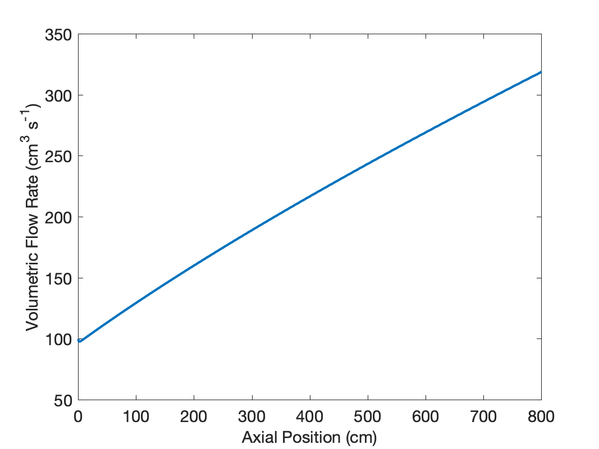

| Elapsed Time (min) | Tracer Concentration (mg L-1) |
|---|---|
| 0.0 | 0.500 |
| 0.5 | 0.431 |
| 1.0 | 0.369 |
| 1.5 | 0.321 |
| 2.0 | 0.275 |
22 The Age Distribution Functions
In the ideal reactors, fluid flow is either perfectly mixed or plug flow. In non-ideal reactors the flow may not be so well-defined. The cumulative age distribution function provides one means of characterizing fluid flow in a reactor. In addition, the related differential age distribution function can be useful when it is necessary to generate a model for a non-ideal reactor.
22.1 The Cumulative and Instantaneous Age Distribution Functions
It is useful to define a hypothetical “fluid element” before considering the age distribution functions. A fluid element is a very small volume of fluid within the total reactor flow. A fluid element is perfectly mixed internally, but it does not mix with any other fluid elements in the reactor. Again, a fluid element is a hypothetical construct, and not something real.
The age of a fluid element, \(\lambda\), is the length of time it stays in the reactor. That is, the age of a fluid element is another name for its residence time. The key point is that one fluid element leaving a reactor can have a different age than another fluid element that is also leaving the reactor.
The cumulative age distribution function, \(F\left(\lambda\right)\), is defined in terms of the fluid leaving a reactor. Specifically, \(F\left(\lambda\right)\) is the fraction of the fluid leaving the reactor that has an age less than or equal to \(\lambda\). Consequently, \(F\left(0\right)\) is equal to zero because fluid can’t leave the reactor if it was never in the reactor (i. e. if it has an age of zero). Assuming that all fluid elements leave the reactor eventually, \(F\left(\infty\right)\) is equal to 1.
The differential age distribution function, \(dF\), is found by taking the derivative of the cumulative age distribution function and multiplying it by a differential change in the age, as shown in Equation 22.1. At any value of the age, \(\lambda\), it represents the fraction of fluid leaving the reactor that has an age between \(\lambda\) and \(\lambda + d\lambda\), where \(d\lambda\) is a differentially small increment in age. By definition then, the sum of the differential changes in the fraction of fluid with ages between 0 and \(\lambda\) must equal the cumulative fraction of the fluid with age \(\lambda\) as shown in Equation 22.2. All of the fluid elements leaving the reactor must have and age between zero an infinity, leading to Equation 22.3.
\[ dF\left(\lambda\right) = \frac{dF}{d\lambda}d\lambda \tag{22.1}\]
\[ F\left(\lambda\right) = \int_0^\lambda dF\left(t\right) \tag{22.2}\]
\[ \int_0^\infty dF\left(t\right) = 1 \tag{22.3}\]
(In some reaction engineering books, \(F\) is referred to as the age function, and \(dF\) is called the age distribution function. Calling \(F\) the age function can be confusing for new learners because \(F\) actually represents a fraction of the fluid that depends upon age, and not age itself. For this reason, in Reaction Engineering Basics, \(F\) is called the cumulative age distribution function and \(dF\) is called the differential age distribution function.)
The cumulative age distribution function represents a useful means of characterizing the flow in a reactor, and the differential age distribution function can be used to model a reactor where the flow is non-ideal. The latter uses are considered in subsequent chapters, but before they can be used, it is necessary to be able to measure the cumulative age distribution function for an actual reactor and to calculate it from the model for a reactor. Doing so is the focus of the rest of this chapter.
22.2 Measuring a Reactor’s Cumulative Age Distribution Function
A chemical species called a tracer is used to measure the cumulative age distribution function for a reactor. A tracer mixes intimately with the other fluid in the reactor, and its mass fraction or mass concentration can be easily determined from a sample of the reactor fluid. Examples of tracers include dyes and small amounts of a radioactive species that can be added easily to the fluid entering a reactor.
22.2.1 Stimulus and Response
Measuring the cumulative age distribution function of an actual reactor begins by changing the mass concentration of tracer in the reactor inlet. This is referred to as applying a stimulus at the reactor inlet. In reaction engineering, step changes and impulses are the most common stimuli. Before applying the stimulus the mass concentration of tracer at the reactor inlet should be constant for sufficient time to allow the tracer concentration throughout the reactor to reach steady-state. The concentration of tracer in the feed prior to applying the tracer may equal zero, but this is not required. All that is required is that the tracer flow is at steady-state. Here, the instant the stimulus is applied will be defined as \(t=0\). The stimuli are applied instantaneously, so \(t\) represents the elapsed time since the stimulus was applied.
The whole purpose of applying a stimulus is to characterize the flow in the reactor. As such, it is essential that the stimulus be applied in a way that does not affect the volumetric flow within the reactor. This can be accomplished by first making sure that the volume of tracer being added is negligibly small compared to the total flow entering the reactor. Additionally, the added tracer temperature must be the same as the feed it is being added to. When these precautions are taken, the feed concentrations (or partial pressures) of all reagents and the feed temperature will be identical to those prior to applying the stimulus. Since the inlet reagent concentrations and temperature are the same, the concentration and temperature profiles within the reactor will also be the same.
With the tracer flow at steady-state, a step change stimulus is applied by instantaneously increasing or decreasing the inlet mass concentration of tracer to a new value and holding it constant at that value. A plot of the inlet tracer concentration vs. time will then look like a stair step as viewed from the side, hence the name step change. The step may be upward or downward as indicated in Figure 22.1. After the change, the inlet mass concentration of tracer is held constant at the new value until the system attains a new steady state.


Again, with the tracer flow at steady-state, an impulse stimulus is applied by instantaneously injecting a fixed mass of tracer into the feed all at once. The inlet mass concentration before and after the injection are the same. Most often they are equal to zero, but again that is not a requirement. A plot of the inlet tracer concentration vs. time will look like a flat line with a spike at the injection time as shown in Figure 22.2. Ideally the width of the spike (duration of the injection) is effectively zero.
Starting from the time the stimulus is applied at the reactor inlet, the mass concentration of tracer in the reactor outlet is measured as a function of time. The variation in the mass concentration of tracer at the reactor outlet over time is called the response. Importantly, the stimulus is applied at the reactor inlet and the response is measured at the reactor outlet. It is equally important that the response is measured for a period of time that is long enough for the outlet mass concentration of tracer to reach steady-state.
22.2.2 Response to an Impulse Stimulus
During the measurement of the cumulative age distribution function, the total mass flow rate through the reactor is constant. The concentration of tracer within the reactor must be at steady-state when the stimulus is applied. Consequently, prior to applying the impulse stimulus, the inlet and outlet mass fractions of tracer are constant and equal with a value that can be represented as \(w_{in}\big\vert_{t<0}\). That amount of tracer is always flowing through the reactor, both before and after the stimulus. After the stimulus has been applied at \(t=0\), any tracer in the output steam in excess of \(w_{in}\big\vert_{t<0}\) (Figure 22.2) must have come from the tracer added in the impulse.
If \(\dot{m}_{total}\) is the total mass flow rate through the reactor and \(w_{out}\) is the instantaneous mass fraction of tracer leaving the reactor, then \(\dot{m}_{total} \left(w_{out} - w_{in}\big\vert_{t<0}\right)\) is the instantaneous outlet mass flow rate of tracer added in the impulse. Integrating that instantaneous mass flow rate over time from the instant the impulse was applied, defined here to equal zero, to a time, \(\lambda\), then gives the cumulative mass of tracer that was added in the impulse and that remained in the reactor for a time less than or equal to \(\lambda\). Dividing that cumulative mass of tracer that has emerged by the total mass injected in the implulse, \(m_{impulse}\), gives the fraction of the tracer injected in the impulse that remained in the reactor for a time less than or equal to \(\lambda\). That is, it gives the value of the cumulative age distribution function for an age of \(\lambda\), Equation 22.4. Since the instant the impulse was applied is defined as time zero, \(\lambda\) in Equation 22.4 is the elapsed time since the application of the impulse.
\[ F\left(\lambda\right) = \frac{\dot{m}_{total}\int_{0}^\lambda \left(w_{out} - w_{in}\big\vert_{t<0}\right)dt}{m_{impulse}} \tag{22.4}\]
Technically this measures the cumulative age distribution function for the tracer that was added in the impulse. However, because the tracer mixes intimately with the other fluid, its cumulative age distribution function is the same as the rest of the fluid.
Assuming that all of the tracer that was added in the impulse eventually leaves the reactor yields Equation 22.5. If for some reason an engineer had data for the response to an impulse stimulus, but did not know the amount of tracer in the impulse, this equation could be used to calculate the denominator in Equation 22.4, provided that the response was measured over a sufficiently long period following the stimulus for the tracer concentration to reach steady-state.
\[ m_{impulse} = \dot{m}_{total}\int_{0}^\infty \left(w_{out} - w_{in}\big\vert_{t<0}\right)dt \tag{22.5}\]
The process described here for measuring the cumulative age distribution function will yield a set of \(\underline{w}_{out}\) vs. \(\underline{\lambda}\) data where \(\underline{\lambda}\) is the set of elapsed times at which the outlet tracer mass fraction, \(w_{out}\), was measured. For each data point in that set, the integral in Equation 22.4 must be evaluated. One way to evaluate the integral is to use the trapezoid rule. Doing so for each data point, \(i\), will yield the corresponding value of \(F\left(\lambda_i\right)\). In other words, the process described here does not yield the cumulative age distribution as an analytical function, but as a table of values of \(F\left(\lambda\right)\) vs. \(\lambda\). This is illustrated in Examples 22.5.1 and 22.5.2.
Equations 22.4 and 22.5 are written in terms of the total mass flow rate and inlet and outlet mass fractions. This is convenient because at steady-state, the total mass flow rate is constant. However, the cumulative age distribution function can also be generated by measuring the mass or molar concentration of the tracer. Equations 22.4 and 22.5 can be converted to use mass or molar concentrations using the relationships from Section 1.1.4.
22.2.3 Response to a Step Change Stimulus
As for the impulse stimulus, the mass flow through the reactor must be constant during the measurement of the cumulative age distribution function, and the concentration of tracer within the reactor must be at steady-state when the stimulus is applied. Consider the application of a step-change stimulus, Figure 22.1 (a) or (b).
Fluid elements entering (and leaving) the reactor prior to the application of the step change at \(t=0\) have a tracer mass fraction of \(w_{in}\big\vert_{t<0}\). After the step change, fluid elements entering the reactor have a tracer mass fraction of \(w_{in}\big\vert_{t>0}\). Fluid leaving the reactor at an elapsed time, \(\lambda\), after the step change will be a mixture of two kinds of fluid elements.
One kind of fluid element is one that has been in the reactor for a period of time greater than \(\lambda\). Since these fluid elements entered before the step change, their tracer weight fraction is \(w_{in}\big\vert_{t<0}\). They can be considered “old” fluid elements.
The other kind of fluid element is one that has been in the reactor for a period of time less than or equal to \(\lambda\). This kind of fluid element can be considered to be a “young” fluid element, and since they entered after the step change, their tracer weight fraction is \(w_{in}\big\vert_{t>0}\).
Suppose that a sample of mass, \(m\), is taken from the reactor outlet at an elapsed time of \(\lambda\). Then by the definition of \(F\left(\lambda\right)\), \(mF\left(\lambda\right)\) is the mass of “young” fluid in the sample, and \(m\left(1-F\left(\lambda\right)\right)\) is the mass of “old” fluid in the sample. The total mass of tracer in the sample, \(m w_{out}\big\vert_{t=\lambda}\), must equal the mass of tracer in the “young” fluid in the sample plus the mass of tracer in the “old” fluid in the sample.
\[ m w_{out}\big\vert_{t=\lambda} = m_{young}w_{young} + m_{old}w_{old} \]
Expressing the masses of “young” and “old” fluid in terms of the cumulative age distribution function and substituting the tracer mass fractions of the “young” and “old” fluid yields Equation 22.6. Solving Equation 22.6 for \(F\left(\lambda\right)\) then yields an expression for calculating \(F\left(\lambda\right)\) from the response to a step-change stimulus, Equation 22.7.
\[ m w_{out}\big\vert_{t=\lambda} = mF\left(\lambda\right)w_{in}\big\vert_{t>0} + m\left(1-F\left(\lambda\right)\right)w_{in}\big\vert_{t<0} \tag{22.6}\]
\[ F\left(\lambda\right) = \frac{w_{out}\big\vert_{t=\lambda} - w_{in}\big\vert_{t<0}}{w_{in}\big\vert_{t>0} - w_{in}\big\vert_{t<0}} \tag{22.7}\]
As is the case when calculating the cumulative age distribution function from the response to an impulse, the procedure described here for analysis of the response to a step-change will not yield an analytical function, but instead, a table of values of \(F\left(\lambda\right)\) vs. \(\lambda\). The procedure is illustrated in Example 22.5.2.
22.3 Generating the Cumulative Age Distribution Function from a Reactor Model
Sometimes, instead of needing the cumulative age distribution function for an actual reactor, an engineer will need the cumulative age distribution function that corresponds to a reactor model. To generate it, the model is used to simulate the response to a step-change or impulse stimulus. This generates simulated \(\underline{w}_{out}\) vs. \(\underline{\lambda}\) data. Depending on whether the response to an impulse or a step-change was simulated, either Equation 22.4 or Equation 22.7 can be used to generate the cumulative age distribution function.
One point to note is that the reactor design equations are usually written as mole balances, but Equations 22.4 and 22.7 are written in terms of mass fractions. Using the molecular weight of the the tracer, it is easy to interconvert between moles and mass.
Additionally it can be noted that if the reactor design equations can be solved analytically, as shown below for an ideal CSTR, an analytical cumulative age distribution function can be generated. If the reactor design equations must be solved numerically, the corresponding cumulative age distribution function will take the form of a table of \(\underline{F}\left(\lambda\right)\) vs. \(\underline{\lambda}\).
22.3.1 Cumulative Age Distribution Function for an Ideal CSTR
Suppose a step-change stimulus is applied as described above to an ideal CSTR. The general form of a mole balance on the tracer is given in Equation 6.24. The volumetric flow rate is not affected by the stimulus, so the fluid volume and volumetric flow rate are constant, and their time-derivatives are zero. The tracer is not a reactant or a product, so its stoichiometric coefficient in all reactions is zero. Letting \(\overline{t} = \frac{V}{\dot{V}}\), the mole balance on the tracer simplifies as shown in Equation 22.8.
\[ \frac{V}{\dot{V}}\frac{d \dot{n}_i}{dt} + \frac{\dot{n}_i}{\dot{V}}\cancelto{0}{\frac{dV}{dt}} - \frac{\dot{n}_iV}{\dot{V}^2}\cancelto{0}{\frac{d \dot{V}}{dt}} = \dot{n}_{i,in} - \dot{n}_i + V \sum_j \cancelto{0}{\nu_{i,j}}r_j \]
\[ \frac{d \dot{n}_{out}}{dt} = \frac{\dot{n}_{in}\big\vert_{t>0} - \dot{n}_{out}}{\overline{t}} \tag{22.8}\]
Before the application of the stimulus, the reactor was at steady-state with a tracer flow rate of \(\dot{n}_{in}\big\vert_{t<0}\), so at the instant the stimulus is applied, \(t=0\), that is the outlet molar flow rate of tracer. This provides the initial value needed to solve the mole balance. Doing so yields Equation 22.9.
\[ \dot{n}_{out} = \dot{n}_{in}\big\vert_{t>0} - \left( \dot{n}_{in}\big\vert_{t>0} - \dot{n}_{in}\big\vert_{t<0}\right)\exp{\left(-\frac{t}{\overline{t}}\right)} \tag{22.9}\]
Click Here to See Where That Came From
Start from Equation 22.8 and separate variables and integrate from the initial values to an arbitrary time and outlet molar flow.
\[ \int_{\dot{n}_{in}\big\vert_{t<0}}^{\dot{n}_{out}}\frac{d \dot{n}_{out}}{\dot{n}_{in}\big\vert_{t>0} - \dot{n}_{out}} = \int_0^t\frac{dt}{\overline{t}} \]
Evaluate the integral.
\[ -\ln{\left(\dot{n}_{in}\big\vert_{t>0} - \dot{n}_{out}\right)}\Bigg\vert_{\dot{n}_{in}\big\vert_{t<0}}^{\dot{n}_{out}} = \frac{t}{\overline{t}}\Bigg\vert_0^t \]
\[ -\ln{\frac{\dot{n}_{in}\big\vert_{t>0} - \dot{n}_{out}}{\dot{n}_{in}\big\vert_{t>0} - \dot{n}_{in}\big\vert_{t<0}}} = \frac{t}{\overline{t}} \]
Multiply both sides by -1 and exponentiate.
\[ \frac{\dot{n}_{in}\big\vert_{t>0} - \dot{n}_{out}}{\dot{n}_{in}\big\vert_{t>0} - \dot{n}_{in}\big\vert_{t<0}} = \exp{\left(-\frac{t}{\overline{t}}\right)} \]
Solve for \(\dot{n}_{out}\).
\[ \dot{n}_{out} = \dot{n}_{in}\big\vert_{t>0} - \left( \dot{n}_{in}\big\vert_{t>0} - \dot{n}_{in}\big\vert_{t<0}\right)\exp{\left(-\frac{t}{\overline{t}}\right)} \]
Equation 22.7 can then be used to generate the cumulative age distribution function for an ideal CSTR. First the mass fractions can be set equal to the tracer mass flow divided by the total mass flow. The total mass flow will cancel out. The numerator and denominator can then be multiplied by the molecular weight of the tracer to convert the mass flow rates to molar flow rates. Finally, Equation 22.9 can be substituted, and the resulting equation can be rearranged to obtain Equation 22.10, the cumulative age distribution function for an ideal CSTR.
\[ F_{CSTR}\left(\lambda\right) = 1 - \exp{\left(-\frac{\lambda}{\overline{t}}\right)} \tag{22.10}\]
Click Here to See Where That Came From
Start with Equation 22.7.
\[ F\left(\lambda\right) = \frac{w_{out}\big\vert_{t=\lambda} - w_{in}\big\vert_{t<0}}{w_{in}\big\vert_{t>0} - w_{in}\big\vert_{t<0}} \]
Express the mass fractions in terms of the mass flow of tracer, \(\dot{m}\), and total mass flow, \(\dot{m}_{tot}\).
\[ F\left(\lambda\right) = \frac{\frac{\dot{m}_{out}}{\dot{m}_{total}}\big\vert_{t=\lambda} - \frac{\dot{m}_{in}}{\dot{m}_{total}}\big\vert_{t<0}}{\frac{\dot{m}_{in}}{\dot{m}_{total}}\big\vert_{t>0} - \frac{\dot{m}_{in}}{\dot{m}_{total}}\big\vert_{t<0}} \]
Cancel out the total mass flow rate, and multiply the numerator and denominator by the inverse of the molecular weight of the tracer, \(M\).
\[ F\left(\lambda\right) = \frac{\frac{\dot{m}_{out}}{M}\big\vert_{t=\lambda} - \frac{\dot{m}_{in}}{M}\big\vert_{t<0}}{\frac{\dot{m}_{in}}{M}\big\vert_{t>0} - \frac{\dot{m}_{in}}{M}\big\vert_{t<0}} \]
Replace the mass flow rate divided by the molecular weight with the molar flow rate of tracer.
\[ F\left(\lambda\right) = \frac{\dot{n}_{out}\big\vert_{t=\lambda} - \dot{n}_{in}\big\vert_{t<0}}{\dot{n}_{in}\big\vert_{t>0} - \dot{n}_{in}\big\vert_{t<0}} \]
Substitute Equation 22.9, evaluated at \(t=\lambda\), for \(\dot{n}\big\vert_{t=\lambda}\).
\[ F\left(\lambda\right) = \frac{\dot{n}_{in}\big\vert_{t>0} - \left( \dot{n}_{in}\big\vert_{t>0} - \dot{n}_{in}\big\vert_{t<0}\right)\exp{\left(-\frac{t}{\overline{t}}\right)} - \dot{n}_{in}\big\vert_{t<0}}{\dot{n}_{in}\big\vert_{t>0} - \dot{n}_{in}\big\vert_{t<0}} \]
Combine the first and last terms in the numerator.
\[ F\left(\lambda\right) = \frac{\left(\dot{n}_{in}\big\vert_{t>0} - \dot{n}_{in}\big\vert_{t<0}\right) - \left( \dot{n}_{in}\big\vert_{t>0} - \dot{n}_{in}\big\vert_{t<0}\right)\exp{\left(-\frac{t}{\overline{t}}\right)}}{\dot{n}_{in}\big\vert_{t>0} - \dot{n}_{in}\big\vert_{t<0}} \]
Finally divide both the numerator and denominator by \(\left(\dot{n}_{in}\big\vert_{t>0} - \dot{n}_{in}\big\vert_{t<0}\right)\).
\[ F\left(\lambda\right) = 1 - \exp{\left(-\frac{\lambda}{\overline{t}}\right)} \]
22.3.2 Cumulative Age Distribution Function for an Ideal PFR
The cumulative age distribution function for an ideal PFR could be generated in the same manner as that used to generate the expression for an ideal CSTR. However, due to the plug flow in the reactor, it is easier and faster to simply deduce the cumulative age distribution function by considering the response to an impulse stimulus.
Ideally the impulse is injected as a differentially thick slug of fluid at the reactor inlet. Due to plug flow, the slug never mixes with any of the fluid ahead of it nor any of the fluid behind it. The slug mass moves from the inlet to the outlet at the total mass flow rate. The instantaneous volumetric flow rate of the slug is equal to the mass flow rate divided by the fluid density, \(\rho_{fluid}\). Dividing the instantaneous volumetric flow rate by the cross-sectional area of the tube then yields the instantaneous linear velocity of the slug, Equation 22.11. The length of the PFR is simply its volume divided by the cross-sectional area, Equation 22.12.
\[ v = \frac{\dot{m}_{total}}{A\rho_{fluid}} \tag{22.11}\]
\[ L = \frac{V_{PFR}}{A} \tag{22.12}\]
For liquids, the density can be assumed to be constant. For gases, if the reactions taking place cause a change in the total molar flow rate, the temperature, or the pressure, the volumetric flow rate, and hence the density, will vary along the length of the reactor. In that case, the linear velocity will also vary along the reactor length, as can be seen from Equation 22.11.
By definition, the linear velocity is the derivative of the axial position with respect to time. Defining \(z=0\) as the reactor inlet and \(z=L\) as the reactor outlet, and noting that the density might change due to gas expansion or contraction, the time required for the slug to reach the outlet, \(\overline{t}\), can be calculated, Equation 22.13. If the density is constant, or if the change in density is ignored, Equation 22.14 results.
\[ \overline{t} = A\int_0^L\frac{dz}{\dot{V}} \tag{22.13}\]
\[ \overline{t} = \frac{V_{PFR}}{\dot{V}} \tag{22.14}\]
Click Here to See Where That Came From
Start with the definition of linear velocity.
\[ v = \frac{dz}{dt} \]
Substitute the linear velocity of the slug of tracer.
\[ \frac{\dot{m}_{total}}{A\rho_{fluid}} = \frac{dz}{dt} \]
Separate the variables, noting that \(\frac{\dot{m}_{total}}{\rho_{fluid}} = \dot{V}\).
\[ dt = \frac{A\rho_{fluid}}{\dot{m}_{total}}dz \qquad \Rightarrow \qquad dt = \frac{A}{\dot{V}}dz \]
Integrate from the instant the stimulus is applied, \(t=0\), at the PFR inlet, \(z=0\), to the time, \(\overline{t}\), the slug reaches the PFR outlet, \(z=L\).
\[ \int_0^\overline{t}{dt} = \int_0^L\frac{A}{\dot{V}}dz \]
Evaluate the time integral. The cross-sectional area is a constant and can be taken outside of the spatial integral, but the volumetric flow rate may change due to a change in total moles, temperature, and/or pressure. In those cases the integral will need to be evaluated for the specific reactor under consideration.
\[ \overline{t} = A\int_0^L\frac{dz}{\dot{V}} \]
If the volumetric flow rate is constant, it can be taken outside the spatial integral, and that integral can be evaluated, too.
\[ \overline{t} = \frac{A}{\dot{V}}\int_0^Ldz = \frac{A\left(L-0\right)}{\dot{V}} = \frac{V_{PFR}}{\dot{V}} \]
So, at elapsed times less than \(\overline{t}\), no tracer will emerge from the reactor. Then, at \(t=\overline{t}\) all of the tracer will emerge at once. Thus, by definition, the cumulative age distribution function for an ideal PFR is given by Equation 22.15.
\[ \begin{matrix} F_{PFR}\left(\lambda\right) = 0, \, \lambda < \overline{t} \\ F_{PFR}\left(\lambda\right) = 1, \, \lambda \ge \overline{t} \end{matrix} \tag{22.15}\]
22.4 Assessing Reactor Ideality Using the Cumulative Age Distribution Function
The cumulative age distribution function can be used to partially test the ideality of a real reactor. To do so, \(F\left(\lambda\right)\), for the real reactor is measured as described above. \(\underline{F}\left(\lambda\right)\) vs. \(\underline{\lambda}\) and either \(F_{CSTR}\) or \(F_{PFR}\) are plotted on the same set of axes. If the plots do not superimpose, the real reactor cannot be modeled as an ideal CSTR or PFR.
If the plots of \(\underline{F}\left(\lambda\right)\) vs. \(\underline{\lambda}\) and either \(F_{CSTR}\) or \(F_{PFR}\) do superimpose, it does not mean the real reactor can be modeled as an ideal CSTR or PFR. The reason for this is that measuring the age function does not fully characterize the mixing within a reactor. It is possible for a reactor to appear to be very well-mixed at a macroscopic level while the mixing is quite poor at a microscopic level. In essence, the test being used here will give a favorable result as long as the time scale for mixing the fluid within the reactor is very small compared to the amount of time the fluid spends in the reactor. However, there is a third time scale that is important, namely the time scale for reaction to occur. If the chemical reaction is very fast compared to the time scale for mixing the fluid in the reactor, then, in a CSTR, for example, a significant amount of reaction will take place before the fluid is well-mixed. In this case, the reactor should not be modeled as an ideal CSTR because on the time scale that the reaction is taking place, it is not perfectly mixed, even though its cumulative age distribuion function matches what would be expected for an ideal CSTR.
Thus, the agreement of cumulative age distribuion functions of the real reactor and the ideal reactor model is a necessary, but not sufficient, criterion for ensuring the validity of modeling the real reactor as ideal. It is most likely to fail when studying very fast chemical reactions. Before generating kinetics data, the age function test nonetheless should be performed on the laboratory reactor, but one should not become complacent if the test is successful.
22.5 Examples
The first two examples that follow show how to measure the cumulative age distribution function using stimulus-response data. The first example also shows how a reactor’s cumulative age distribution can be compared to that for an equivalent ideal reactor. Additionally, they illustrate the importance of measuring the response for a sufficiently long period of time that the tracer concentration reaches steady-state. The third example illustrates the generation of a cumulative age distribution function from the model for a PFR. It additionally examines the effect of varying fluid density in a PFR upon the cumulative age distribution function.
22.5.1 Measuring the Cumulative Age Distribution Function using Impulse Response Data
An engineer needed to measure the cumulative age distribution function for a 10 L stirred tank reactor in which a liquid-phase reaction was taking place. With the reactor operating at a flow rate of 3 L min-1, the engineer instantaneously added 5 mg of a tracer to the stirred tank, and measured the tracer concentration in the outlet as a function of time since the injection.
The first few data are presented in Table 22.1, and the full data set is saved in the file, data.csv. Use those data to generate the cumulative age distribution function for the reactor.
Click Here to See What an Expert Might be Thinking at this Point
This assignment asks me to generate the cumulative age distribution for a stirred tank reactor. It describes a stimulus wherein a fixed amount of tracer was added all at once to the reactor. That is an impulse stimulus. I’ll begin by summarizing the assignment, using appropriate variables to represent each quantity mentioned in the narrative, and I’ll use subscripted “in” and “out” to denote values at the reactor inlet and outlet, respectively. The reacting fluid is a liquid, so assuming it to be incompressible, the volumetric flow rate is constant and it is not necessary to differentiate between the inlet and outlet. The measured response is the mass concentration of tracer, which I’ll represent at \(C_{mass}\). I’ll underline variable symbols that represent a set of values.
22.5.1.1 Assignment Summary
Reactor System: Stirred tank
Quantities of Interest: \(\underline{F}\left(\lambda\right)\) vs. \(\underline{\lambda}\)
Given and Known Constants: \(V\) = 10 L, \(\dot{V}\) = 3 L min-1, \(m_{impulse}\) = 5.0 mg, \(\underline{C}_{mass,out}\) vs. \(\underline{t}\)
Stimulus: Impulse
22.5.1.2 Mathematical Formulation of the Analysis
Click Here to See What an Expert Might be Thinking at this Point
Equation 22.4 relates the response to an impulse stimulus to the cumulative age distribution function. Since that equation is in terms of the tracer weight fraction, I’ll need to re-write it in terms of the data I have available.
\[ F\left(\lambda\right) = \frac{\dot{m}_{total}\int_{0}^\lambda \left(w_{out} - w_{in}\big\vert_{t<0}\right)dt}{m_{impulse}} \]
Performing the multiplication and noting that the total mass flow times the mass fraction of tracer is equal to the mass flow rate of tracer, \(\dot{m}\), giving an expression in terms of the mass flow of tracer.
\[ F\left(\lambda\right) = \frac{\int_{0}^\lambda \left(\dot{m}_{total}w_{out} - \dot{m}_{total}w_{in}\big\vert_{t<0}\right)dt}{m_{impulse}} = \frac{\int_{0}^\lambda \left(\dot{m}_{out} - \dot{m}_{in}\big\vert_{t<0}\right)dt}{m_{impulse}} \]
The mass flow of tracer can then be expressed in terms of the volumetric flow rate and the mass concentration of tracer.
\[ F\left(\lambda\right) = \frac{\int_{0}^\lambda \left(\dot{V}C_{mass,out} - \dot{V}C_{mass,in}\big\vert_{t<0}\right)dt}{m_{impulse}} \]
There wasn’t any tracer in the feed before the engineer applied the impulse, so \(C_{mass,in}\big\vert_{t<0}\) is equal to zero, and the volumetric flow rate is constant and can be taken outside of the integral.
\[ F\left(\lambda\right) = \frac{\dot{V}\int_{0}^\lambda C_{mass,out}dt}{m_{impulse}} \]
Cumulative Age Distribution Function
The cumulative age distribution function is related to the response to an impulse stimulus as shown in equation (1).
\[ F\left(\lambda\right) = \frac{\dot{V}\int_{0}^\lambda C_{mass,out}dt}{m_{impulse}} \tag{1} \]
The integral in equation (1) can be evaluated for each data point using the trapezoid rule. If \(i\) is used to index the measured responses, and \(N_i\) is the number of measured responses, the value of the cumulative age distribution function from each response can be calculated using equation (2).
\[ F_i\left(\lambda_i\right) = \frac{\dot{V}}{m_{impulse}} \sum_{i=2}^{N_i}\left(\frac{C_{mass,i} + C_{mass,i-1}}{2}\left(t_i - t_{i-1}\right)\right)\tag{2} \]
22.5.1.3 Results, Analysis, and Discussion
Click Here to See What an Expert Might be Thinking at this Point
When stimulus-response experiments are performed, the response should be measured for as long as it takes for the tracer flow to reach steady-state. I’m going to plot the response data to make sure that the tracer flow did, in fact reach steady-state.
The measured outlet tracer concentration is plotted against the elapsed time in Figure 22.3. The curve has the expected shape and limiting values. Specifically, the instant the 5.0 mg of tracer is injected to the 10 L of fluid in the reactor, the concentration jumps to 0.5 mg L-1, as would be expected if the mixing is very rapid. The outlet concentration then decreases steadily because tracer is flowing out, but none is being added to replace it. Eventually, the concentration of tracer goes to zero and holds at that new steady-state value.

Using those response data, the calculations were performed as described above, and the resulting cumulative age distribution function is plotted in Figure 22.4. The cumulative age distribution function equals zero at an age of zero and it asymptotically approaches a value of one as the age increases. This is the expected limiting behavior for \(F\left(\lambda\right)\).

The space time, or average residence time, for this reactor is 3.3 min. The cumulative age distribution function for an ideal CSTR operating at that average residence time can be calculated using Equation 22.10. Doing so yields the curve also plotted in Figure 22.4. While the assignment did not ask for an assessment of the ideality of the stirred tank, it clearly satisfies the necessary condition that its cumulative age distribution function matches that of an ideal CSTR.
When the age function for a stirred tank is equal to that for an ideal CSTR operating at the same average residence time, it means that mixing in the stirred tank is very rapid relative to the residence time. If, however, the rate of reaction is much faster than the mixing time, the reactor cannot be modeled as an ideal CSTR, even though the stirred tank satisifes the necessary condition that its age function equals that of an equivalent ideal CSTR.
Finally, if one carefully examines the response data in Figure 22.3, a small amount of random error can be seen, especially at larger elapsed times. Interestingly, random error appears to be absent when the response data are processed to find the cumulative age distribution function. The reason for this is the integral in equation (1). Integration tends to smooth out noisy data.
Note
Earlier in this chapter it was stated that the period during which the response is measured should be long enough for the outlet tracer flow to attain steady state. In this example, an impulse stimulus was applied. Suppose that the response was only measured for five minutes after the application of the stimulus. Figure 22.3 shows that after 5 min, the outlet tracer concentraion would be 0.11 mg L-1. It would not yet have reached its steady-state value of 0 mg L-1. Looking at equation (2), the values of \(F\) would not change, and the graph showing the cumulative age distribution function would be the same as Figure 22.4 except that it would end at an age of 5 min, and \(F\) would not reach a value of 1.0. In this case, it would be apparent that the response had not been measured for a sufficiently long time, but no errors would have been introduced.
However, if the mass of the tracer in the impulse, \(m_{tracer}\), was unknown, and Equation 22.5 had to be used, the mass of tracer in the impulse would be incorrect because only part of the response would be included in the integral. This, in turn would lead to incorrect values of \(F\). For example, if only the first 10 response data were included in Equation 22.5, it would predict that the mass of tracer in the impulse was 3.71 mg, and not the actual amount of 5 mg.
That, in turn, changes the cumulative age distribution function as shown in Figure 22.5. When the true impulse mass is used, the resulting cumulative age distribution function is correct, and it is apparent that the response was not measured for a sufficiently long time because \(F\) never reaches a value of 1.

However, if Equation 22.5 is used to calculate the impulse mass, Figure 22.5 shows that the values of \(F\) are incorrect and those incorrect values indicate that \(F\) reaches a value of 1 at the final measured response. For this reason, the response should be plotted or examined to make sure the outlet tracer concentration reached steady-state during the stimulus-response experiment before proceding to generate the cumulative age distribution function. If the response is not checked for completeness, it might go unnoticed that the cumulative age distribution function is incorrect!
22.5.2 Measuring the Cumulative Age Distribution Function using Step Change Response Data
A gas-phase reaction is taking place at steady-state in an adiabatic flow reactor. The reaction causes an increase in both the total number of moles and the temperature. As a consequence, the inlet volumetric flow rate is 10 L min-1 and the outlet volumetric flow rate is 12.2 L min-1. The flowing feed gas contains an inert tracer at a concentration of 2 mmol L-1. To measure the cumulative age distribution function, the feed flow of the tracer, but nothing else, was stopped, and the molar concentration of tracer leaving the reactor was measured as a function of time. It should be noted that because the tracer flow rate was very, very small, the total inlet and outlet flow rates were not affected when the tracer flow was stopped.
The first few measured outlet concentrations are presented in Table 22.2, and the full data set is saved in the file, data.csv. Use those data to generate the cumulative age distribution function for the reactor.
| Elapsed Time (min) | Tracer Concentration (mmol L-1) |
|---|---|
| 0.0 | 1.640 |
| 0.2 | 1.010 |
| 0.4 | 0.624 |
| 0.6 | 0.367 |
| 0.8 | 0.234 |
Click Here to See What an Expert Might be Thinking at this Point
This assignment describes an experiment wherein a tracer was flowing at a steady rate, when the amount was suddenly changed to a different steady level. That’s a step-change stimulus, and the assignment asks me to use the resulting response data to generate the cumulative age distribution function.
I’ll begin by summarizing the assignment using appropriate variables to represent each given quantity. I’ll use subscripted “in” and “out” to denote the reactor inlet and outlet, and I’ll underline variable symbols that represent a set of values.
22.5.2.1 Assignment Summary
Reactor System: Flow reactor of unspecified type
Quantities of Interest: \(\underline{F}\left(\lambda\right)\) vs. \(\underline{\lambda}\)
Given and Known Constants: \(\dot{V}_{in}\) = 10 L min1, \(\dot{V}_{out}\) = 12.2 L min-1, \(C_{in}\big\vert_{t<0}\) = 2.0 mmol L-1, \(C_{in}\big\vert_{t>0}\) = 0.0, \(\underline{C}_{out}\) vs. \(\underline{t}\)
Stimulus: Step Change
22.5.2.2 Mathematical Formulation of the Analysis
Click Here to See What an Expert Might be Thinking at this Point
Equation 22.7 relates the cumulative age distribution function to the response to a step change stimulus. It is expressed in terms of mass fractions, but the experimental data are in terms of molar concentration, so I’ll need to convert it to those units.
\[ F\left(\lambda\right) = \frac{w_{out}\big\vert_{t=\lambda} - w_{in}\big\vert_{t<0}}{w_{in}\big\vert_{t>0} - w_{in}\big\vert_{t<0}} \]
Multiplying the numerator and denominator by the total mass flow rate, yields an expression in terms of the tracer mass flow rate.
\[ F\left(\lambda\right) = \frac{\dot{m}_{total}w_{out}\big\vert_{t=\lambda} - \dot{m}_{total}w_{in}\big\vert_{t<0}}{\dot{m}_{total}w_{in}\big\vert_{t>0} - \dot{m}_{total}w_{in}\big\vert_{t<0}} = \frac{\dot{m}_{out}\big\vert_{t=\lambda} - \dot{m}_{in}\big\vert_{t<0}}{\dot{m}_{in}\big\vert_{t>0} - \dot{m}_{in}\big\vert_{t<0}} \]
Dividing numerator and denominator by the molecular weight of the tracer yields an expression in terms of the tracer molar flow rate.
\[ F\left(\lambda\right) = \frac{\frac{\dot{m}_{out}}{M}\big\vert_{t=\lambda} - \frac{\dot{m}_{in}\big\vert_{t<0}}{M}}{\frac{\dot{m}_{in}\big\vert_{t>0}}{M} - \frac{\dot{m}_{in}\big\vert_{t<0}}{M}} = \frac{\dot{n}_{out}\big\vert_{t=\lambda} - \dot{n}_{in}\big\vert_{t<0}}{\dot{n}_{in}\big\vert_{t>0} - \dot{n}_{in}\big\vert_{t<0}} \]
Finally, the molar flow rates of tracer can be expressed in terms of the total volumetric flow rates and the molar concentration of tracer.
\[ F\left(\lambda\right) = \frac{\dot{V}_{out}C_{out}\big\vert_{t=\lambda} - \dot{V}_{in}C_{in}\big\vert_{t<0}}{\dot{V}_{in}C_{in}\big\vert_{t>0} - \dot{V}_{in}C_{in}\big\vert_{t<0}} \]
Additionally, the concentration of tracer in the feed after the stimulus is equal to zero.
\[ F\left(\lambda\right) = \frac{\dot{V}_{out}C_{out}\big\vert_{t=\lambda} - \dot{V}_{in}C_{in}\big\vert_{t<0}}{ - \dot{V}_{in}C_{in}\big\vert_{t<0}} = \frac{\dot{V}_{in}C_{in}\big\vert_{t<0}- \dot{V}_{out}C_{out}\big\vert_{t=\lambda}}{ \dot{V}_{in}C_{in}\big\vert_{t<0}} \]
The value of the cumulative age distribution function at each of the times when the response was measured can be calculated using equation (1).
\[ F\left(\lambda\right) = \frac{\dot{V}_{in}C_{in}\big\vert_{t<0}- \dot{V}_{out}C_{out}\big\vert_{t=\lambda}}{ \dot{V}_{in}C_{in}\big\vert_{t<0}} \tag{1} \]
22.5.2.3 Results, Analysis, and Discussion
Click Here to See What an Expert Might be Thinking at this Point
Before I present the cumulative age distribution function results, I’ll plot the response data. By doing so, I can determine whether the tracer flow had attained steady-state during the interval when the response was recorded. Then, if it had, I’ll present the cumulative age distribution function results.
The response data are plotted in Figure 22.6. After the application of the stimulus there is no tracer flowing into the reactor. So after the stimulus, the tracer flow at the outlet should reach a steady-state value of zero. The figure shows that this is true, so the response data are suitable for generating the cumulative age distribution function.
Before the step change, the steady-state inlet tracer concentration was 2 mM, but due to expansion of the gas, the steady state outlet concentration was ca. 1.64 mM. The instant the stimulus is applied at inlet, the outlet concentration of tracer will still equal 1.64 mM, as seen in Figure 22.6. Over time, as the tracer within the reactor flows out and no new tracer is added, the outlet tracer concentration falls to zero.
Knowing that the response had reached steady-state during the time it was measured, the calculations were performed as described above. The resulting cumulative age distribution function is shown in Figure 22.7. It displays the expected limiting behavior where \(F\left(0\right)=0\) and \(F\left(\infty\right)=1\).
Note
The note at the end of Example 22.5.1 showed, for an impulse stimulus, that if the response had not reached steady-state during the time it was monitored, and if the impulse mass was calculated using Equation 22.5, an incorrect cumulative age distribution function would be generated.
However, if the impulse mass was measured and used in the calculation of the cumulative age distribution function, the results will be valid. However, the resulting cumulative age distribution function will not reach its final value of 1.0. The same thing will happen in the case of a step-change stimulus: if the response does not reach steady state during the time it is measured, the resulting cumulative age distribution function will be correct, but it will not reach its final value of 1.0. This is apparent from Equation 22.7, reproduced below. When the response reaches steady-state, \(w_{out}\big\vert_{t=\lambda}\) becomes equal to \(w_{in}\big\vert_{t>0}\), making the numerator and denominator equal to each other and \(F\) equal to 1.0. Prior to the response reaching steady-state, \(F\) will be less than 1.0, but correct.
\[ F\left(\lambda\right) = \frac{w_{out}\big\vert_{t=\lambda} - w_{in}\big\vert_{t<0}}{w_{in}\big\vert_{t>0} - w_{in}\big\vert_{t<0}} \]
22.5.3 Effect of Density Variation on the Cumulative Age Distribution Function of a PFR
A tubular reactor is being used for the gas-phase decomposition of reagent A according to reaction (1). The reactor operates at steady-state using a feed that contains 75% reagent A and 25% inert gas at 3 atm and 375 °C. The feed flows into the 2.5 cm, diameter, 8 m long reactor at 100 cm3 s-1 (0.44 g s-1). The reactor tube is surrounded by molten salt, also at 375 °C. The heat transfer coefficient is 187 kJ h-1 m-2 K-1. The reactor is packed with catalyst particles that have a 0.25 cm diameter and a sphericity of 0.7. The bed porosity is 0.6. The presence of the packing causes a pressure drop along the length of the reactor.
The rate expression for the reaction is given in equation (2) where the Arrhenius pre-exponential factor and activation energy for the forward rate coefficient are 9.0 x 1017 mol cm3 s-1 atm-1 and 285 kJ mol-1, respectively. The Arrhenius parameters for the reverse rate coefficient are 4.09 x 10-4 mol cm3 s-1 atm-4 and 85 kJ mol-1. The heat of reaction is constant and equal to 200 kJ mol-1. The heat capacities of A, Y, Z, and I are constant and equal to 11.7 cal mol-1 K-1, 8.3 cal mol-1 K-1, 4.3 cal mol-1 K-1, and 5.8 cal mol-1 K-1, respectively. The gas viscosity is constant and equal to 0.27 cP.
If this reactor is an ideal PFR, what is its cumulative age distribution function?
\[ A \rightleftarrows Y + 3 Z \tag{1} \]
\[ r = k_fP_A - k_rP_YP_Z^3 \tag{2} \]
Click Here to See What an Expert Might be Thinking at this Point
The assignment asks me to generate the cumulative age distribution function for an ideal PFR. It does not present stimulus-response data, so the cumulative age distribution function will need to be generated from a model for the reactor. I’ll begin by summarizing the assignment using appropriate variable symbols for the given quantities. I’ll use a subscripted “0” to denote quantities at the reactor inlet, and “1” for quantities at the outlet.
22.5.3.1 Assignment Summary
Reactor System: Ideal, steady-state PFR with heat exchange and pressure drop
Reactor Schematic:

Quantity of Interest: \(F\left(\lambda\right)\)
Given and Known Constants: \(y_{A,0}\) = 0.75, \(y_{I,0}\) = 0.25, \(P_0\) = 3 atm, \(T_0\) = 375 °C, \(D\) = 2.5 cm, \(L\) = 8 m, \(\dot{V}_0\) = 100 cm3 s-1, \(\dot{m}_{total}\) = 0.44 g s-1, \(T_{ex}\) = 375 °C, \(U\) = 187 kJ h-1 m-2 K-1, \(D_p\) = 0.25 cm, \(\Phi_s\) = 0.7, \(\epsilon\) = 0.6, \(k_{0,f}\) = 9.0 x 1017 mol cm3 s-1 atm-1, \(E_f\) = 285 kJ mol-1, \(k_{0,r}\) = 4.09 x 10-4 mol cm3 s-1 atm-4, \(E_r\) = 85 kJ mol-1, \(\Delta H\) = 200 kJ mol-1, \(\hat{C}_{p,A}\) = 11.7 cal mol-1 K-1, \(\hat{C}_{p,Y}\) = 8.3 cal mol-1 K-1, \(\hat{C}_{p,Z}\) = 4.3 cal mol-1 K-1, \(\hat{C}_{p,I}\) = 5.8 cal mol-1 K-1, and \(\mu\) = 0.27 cP.
22.5.3.2 Mathematical Formulation of the Analysis
Click Here to See What an Expert Might be Thinking at this Point
The cumulative age distribution function for an ideal PFR is given in Equation 22.15.
\[ \begin{matrix} F_{PFR}\left(\lambda\right) = 0, \, \lambda < \overline{t} \\ F_{PFR}\left(\lambda\right) = 1, \, \lambda \ge \overline{t} \end{matrix} \]
If the volumetric flow rate is constant, \(\overline{t}\) can be calculated directly using Equation 22.14. Here, however, the gaseous reacting fluid will expand/contract due to the change in the total moles, temperature, and pressure along the length of the reactor. In this case the volumetric flow rate along the length of the reactor is needed to calculate \(\overline{t}\) using Equation 22.13. I need a model for the ideal PFR to calculate the volumetric flow rate profile, so I’ll generate the PFR model first.
I need design equations to model the reactor. Mole balances are always included in the reactor design equations. I’ll write mole balances for each of the reagents, A, Y, Z, and I. The reactor is not isothermal, so I’ll also need an energy balance on the reacting fluid. There is a heat exchange fluid (actually molten salt), but I can solve the reactor design equations independently of an energy balance on the exchange fluid because I know the temperature of the exchange fluid. Therefore, I will not include an energy balance on the heat exchange fluid in the design equations. The assignment narrative says that there is a pressure drop, so I will also need to include a momentum balance.
The general form of a mole balance for an ideal PFR is given in Equation 6.33.
\[ \frac{\partial \dot{n}_i}{\partial z} + \frac{\pi D^2}{4\dot{V}} \cancelto{0}{\frac{\partial\dot{n}_i}{\partial t}} - \frac{\pi D^2\dot{n}_i}{4\dot{V}^2} \cancelto{0}{\frac{\partial \dot{V}}{\partial t}} =\frac{\pi D^2}{4}\cancelto{\nu_ir}{\sum_j \nu_{i,j}r_j} \]
The present reactor operates at steady-state, so the time derivatives are both equal to zero. There is only one reaction taking place, so the summation reduces to a single term, and it isn’t necessary to index the reaction. The stoichiometric coefficients of A, Y, Z, and I are equal to -1, 1, 3, and 0, respectively.
\[ \frac{\partial \dot{n}_i}{\partial z} = \frac{\pi D^2}{4} \nu_ir \]
The general form of the ideal PFR energy balance is given in Equation 6.34.
\[ \begin{split} \left(\sum_i \dot{n}_i \hat{C}_{p,i} \right) \frac{\partial T}{\partial z} +& \frac{\pi D^2}{4\dot{V}} \sum_i \left(\dot{n}_i \hat{C}_{p,i} \right) \cancelto{0}{\frac{\partial T}{\partial t}} - \frac{\pi D^2}{4} \cancelto{0}{\frac{\partial P}{\partial t}} \\ &= \pi D U\left( T_{ex} - T \right) - \frac{\pi D^2}{4}\cancelto{r\Delta H}{\sum_j r_j \Delta H_j} \end{split} \]
As with the mole balance, both time derivatives are equal to zero since the reactor operates at steady-state. Also, there is only one reaction, so the final sum reduces to a single term, and it isn’t necessary to index the reaction.
\[ \left(\sum_i \dot{n}_i \hat{C}_{p,i} \right) \frac{\partial T}{\partial z} = \pi D U\left( T_{ex} - T \right) - \frac{\pi D^2}{4} r \Delta H \]
The energy balance can be written in the form of a derivative expression by expanding the sum and dividing both sides of the equation by it.
\[ \frac{dT}{dz} = \frac{\pi DU\left(T_{ex} - T\right) - \frac{\pi D^2}{4}r\Delta H}{\dot{n}_A\hat{C}_{p,A} + \dot{n}_Y\hat{C}_{p,Y} + \dot{n}_Z\hat{C}_{p,Z} + \dot{n}_I\hat{C}_{p,I}} \]
For a packed bed tubular reactor, the Ergun equation, Equation 6.42, is the momentum balance.
Design Equations
\[ \frac{d\dot{n}_A}{dz} = - \frac{\pi D^2}{4}r \tag{3} \]
\[ \frac{d\dot{n}_Y}{dz} = \frac{\pi D^2}{4}r \tag{4} \]
\[ \frac{d\dot{n}_Z}{dz} = 3\frac{\pi D^2}{4}r \tag{5} \]
\[ \frac{d\dot{n}_I}{dz} = 0 \tag{6} \]
\[ \frac{dT}{dz} = \frac{\pi DU\left(T_{ex} - T\right) - \frac{\pi D^2}{4}r\Delta H}{\dot{n}_A\hat{C}_{p,A} + \dot{n}_Y\hat{C}_{p,Y} + \dot{n}_Z\hat{C}_{p,Z} + \dot{n}_I\hat{C}_{p,I}} \tag{7} \]
\[ \frac{dP}{dz} = - \frac{1-\epsilon}{\epsilon^3}\frac{G^2}{\rho \Phi_s D_p} \left[\frac{150\left(1-\epsilon\right)\mu}{\Phi_s D_p G} + 1.75\right] \tag{8} \]
Click Here to See What an Expert Might be Thinking at this Point
The design equations are IVODEs, and they are written in the form of derivatives expressions. The independent variable is \(z\), and the dependent variables are \(\dot{n}_A\), \(\dot{n}_Y\), \(\dot{n}_Z\), \(\dot{n}_I\), \(T\), and \(P\). I will solve them numerically, and to do so I need initial values and a stopping criterion. The reactor inlet can be defined as \(z=0\), and with that definition, the equations should be integrated until \(z=L\), so that is the stopping criterion. Having defined \(z=0\) as the reactor inlet, the remaining initial values are the values of the dependent variables at the reactor inlet. For this system, there isn’t any Y or Z at the inlet, and the inlet temperature and pressure are given. The inlet molar flow rates of A and I can be found by using the ideal gas law to calculate the total inlet molar flow rate and then multiplying by the inlet mole fractions of A and I.
Initial Values and Stopping Criterion
| Variable | Initial Value | Stopping Criterion |
|---|---|---|
| \(z\) | \(0\) | \(L\) |
| \(\dot{n}_A\) | \(y_{A,0}\displaystyle\frac{P_0\dot{V}_0}{RT_0}\) | |
| \(\dot{n}_Y\) | \(0\) | |
| \(\dot{n}_Z\) | \(0\) | |
| \(\dot{n}_I\) | \(y_{I,0}\displaystyle\frac{P_0\dot{V}_0}{RT_0}\) | |
| \(T\) | \(T_0\) | |
| \(P\) | \(P_0\) |
Click Here to See What an Expert Might be Thinking at this Point
In addition to the initial values and stopping criterion, I will also need to write a derivatives function that will be used by an IVODE solver to solve the design equations numerically. The derivatives function will receive the values of the independent and dependent variables at the start of an integration step, and it must calculate and return the corresponding values of the derivatives of the dependent variables with respect to the independent variable.
Before the derivatives can be evaluated, all of the unknown quantities appearing in the derivatives expressions must be calculated. Looking at the derivatives expressions I see that \(r\), \(G\), and \(\rho\) appear in the derivatives expressions and are unknown.
The rate can be calculated using the rate expression given in the assignment narrative. Before that can be done, the rate coefficients must be calculated using the Arrhenius expression, Equation 4.8. The partial pressures in the rate expression can be found by calculating the mole fractions of A, Y, and Z and multiplying the total pressure by them.
The mass velocity, \(G\), is simply the total mass flow rate divided by the cross-sectional area of the tubular reactor. The density will vary as the gas expands/contracts. However, it can be calculated as the ratio of the total mass flow rate to the volumetric flow rate. The volumetric flow rate can be calculated using the ideal gas law.
Once \(r\), \(G\), and \(\rho\) have been calculated, the design equations can be evaluated and their values returned.
PFR Derivatives Function
Arguments: \(z\), \(\dot{n}_A\), \(\dot{n}_Y\), \(\dot{n}_Z\), \(\dot{n}_I\), \(T\), and \(P\).
Returns: \(\frac{d\dot{n}_A}{dz}\), \(\frac{d\dot{n}_Y}{dz}\), \(\frac{d\dot{n}_Z}{dz}\), \(\frac{d\dot{n}_I}{dz}\), \(\frac{dT}{dz}\), and \(\frac{dP}{dz}\).
Algorithm:
\[ k_f = k_{0,f}\exp{\left(\frac{-E_f}{RT}\right)} \tag{9} \]
\[ k_r = k_{0,r}\exp{\left(\frac{-E_r}{RT}\right)} \tag{10} \]
\[ P_A = \frac{\dot{n}_AP}{\dot{n}_A + \dot{n}_Y + \dot{n}_Z + \dot{n}_I} \tag{11} \]
\[ P_Y = \frac{\dot{n}_YP}{\dot{n}_A + \dot{n}_Y + \dot{n}_Z + \dot{n}_I} \tag{12} \]
\[ P_Z = \frac{\dot{n}_ZP}{\dot{n}_A + \dot{n}_Y + \dot{n}_Z + \dot{n}_I} \tag{13} \]
\[ r = k_fP_A - k_rP_YP_Z^3 \tag{2} \]
\[ G = \frac{4\dot{m}_{total}}{\pi D^2} \tag{14} \]
\[ \rho = \frac{\dot{m}_{total}}{\dot{V}} = \frac{\dot{m}_{total}P}{\left(\dot{n}_A + \dot{n}_Y + \dot{n}_Z + \dot{n}_I\right)RT} \tag{15} \]
\[ \frac{d\dot{n}_A}{dz} = - \frac{\pi D^2}{4}r \tag{3} \]
\[ \frac{d\dot{n}_Y}{dz} = \frac{\pi D^2}{4}r \tag{4} \]
\[ \frac{d\dot{n}_Z}{dz} = 3\frac{\pi D^2}{4}r \tag{5} \]
\[ \frac{d\dot{n}_I}{dz} = 0 \tag{6} \]
\[ \frac{dT}{dz} = \frac{\pi DU\left(T_{ex} - T\right) - \frac{\pi D^2}{4}r\Delta H}{\dot{n}_A\hat{C}_{p,A} + \dot{n}_Y\hat{C}_{p,Y} + \dot{n}_Z\hat{C}_{p,Z} + \dot{n}_I\hat{C}_{p,I}} \tag{7} \]
\[ \frac{dP}{dz} = - \frac{1-\epsilon}{\epsilon^3}\frac{G^2}{\rho \Phi_s D_p} \left[\frac{150\left(1-\epsilon\right)\mu}{\Phi_s D_p G} + 1.75\right] \tag{8} \]
Click Here to See What an Expert Might be Thinking at this Point
At this point I have everything I need to solve the reactor design equations numerically using an IVODE solver. I don’t need to solve them for different reactor parameters or inputs, so I’ll write a simple reactor function that calculates the initial values and then uses an IVODE solver to solve the design equations. Doing so will return corresponding sets of values of the independent and dependent variables that span the range from the reactor inlet to its outlet. The reactor function simply needs to return those profiles.
PFR Reactor Function
Arguments: none.
Returns: \(\underline{z}\), \(\underline{\dot{n}}_A\), \(\underline{\dot{n}}_Y\), \(\underline{\dot{n}}_Z\), \(\underline{\dot{n}}_I\), \(\underline{T}\), and \(\underline{P}\)
Algorithm:
\[ \begin{matrix} \text{initial values, stopping criterion, and PFR derivatives function}\\ \Downarrow\\ \text{IVODE solver}\\ \Downarrow\\ \underline{z}, \underline{\dot{n}}_A, \underline{\dot{n}}_Y, \underline{\dot{n}}_Z, \underline{\dot{n}}_I, \underline{T}, \underline{P} \end{matrix} \tag{16} \]
Click Here to See What an Expert Might be Thinking at this Point
The cumulative age distribution function for an ideal PFR is given in Equation 22.15.
\[ \begin{matrix} F_{PFR}\left(\lambda\right) = 0, \, \lambda < \overline{t} \\ F_{PFR}\left(\lambda\right) = 1, \, \lambda \ge \overline{t} \end{matrix} \]
I needed the reactor model to calculate \(\overline{t}\). Equation 22.13 is used to do so. More specifically, solving the PFR design equations will given the molar flow rates of the reagents, temperature and pressure along the length of the reactor. They can be used to calculate the volumetric flow rate along the length of the reactor.
\[ \overline{t} = A\int_0^L\frac{dz}{\dot{V}} \]
The reactor profiles, including the calculated volumetric flow rate profile will not be analytical functions. They will take the form of a table of values. As such, the trapezoid rule can be used to evaluate the integral and calculate \(\overline{t}\).
Equations
\[ \begin{matrix} F_{PFR}\left(\lambda\right) = 0, \, \lambda < \overline{t} \\ F_{PFR}\left(\lambda\right) = 1, \, \lambda \ge \overline{t} \end{matrix} \tag{17} \]
\[ \overline{t} = A\int_0^L\frac{dz}{\dot{V}} \tag{18} \]
Let \(i\) index the corresponding values of \(\underline{z}\), \(\underline{\dot{n}}_A\), \(\underline{\dot{n}}_Y\), \(\underline{\dot{n}}_Z\), \(\underline{\dot{n}}_I\), \(\underline{T}\), and \(\underline{P}\) calculated using the PFR reactor function, and let \(N_i\) equal the number of values in each of those arrays.
\[ \dot{V}_i = \frac{\left(\dot{n}_{A,i} + \dot{n}_{Y,i} + \dot{n}_{Z,i} + \dot{n}_{I,i}\right)RT_i}{P_i}\tag{19} \]
\[ A = \frac{\pi D^2}{4} \tag{20} \]
\[ \overline{t} = A \sum_{i=2}^{N_i} \left( \frac{1}{2}\left( \frac{1}{\dot{V}_{i-1}} + \frac{1}{\dot{V}_{i}} \right)\left( z_i - z_{i-1} \right) \right) \tag{21} \]
Algorithm
\[ \begin{matrix} \text{PFR reactor function} \\ \Downarrow \\ \underline{z}, \underline{\dot{n}}_A, \underline{\dot{n}}_Y, \underline{\dot{n}}_Z, \underline{\dot{n}}_I, \underline{T}, \underline{P} \end{matrix} \tag{22} \]
\[ \dot{V}_i = \frac{\left(\dot{n}_{A,i} + \dot{n}_{Y,i} + \dot{n}_{Z,i} + \dot{n}_{I,i}\right)RT_i}{P_i}\tag{19} \]
\[ A = \frac{\pi D^2}{4} \tag{20} \]
\[ \overline{t} = A \sum_{i=2}^{N_i} \left( \frac{1}{2}\left( \frac{1}{\dot{V}_{i-1}} + \frac{1}{\dot{V}_{i}} \right)\left( z_i - z_{i-1} \right) \right) \tag{21} \]
22.5.3.3 Results, Analysis, and Discussion
The calculations were performed as described above, and in fact, the volumetric flow rate does increase significantly, as shown in Figure 22.9. This is largely due to the change in the total molar flow rate; the conversion is 80.9%. The temperature only drops slightly to 364 °C, and similarly the pressure drop to 2.61 atm is small.

This has a significant effect upon \(\overline{t}\), which was found to equal 20.4 s. Consequently, the cumulative age distribution function is given by equation (22).
\[ \begin{matrix} F_{PFR}\left(\lambda\right) = 0, \, \lambda < 20.4 s \\ F_{PFR}\left(\lambda\right) = 1, \, \lambda \ge 20.4 s \end{matrix} \tag{22} \]
If the expansion of the gas had been neglected with the density calculated using the inlet volumetric flow rate, \(\overline{t}\) would have bee found to equal 39.3 s.
22.6 Symbols Used in Chapter 22
| Symbol | Meaning |
|---|---|
| \(dF\) | Differential age distribution function. |
| \(i\) | Index of experimental data points. |
| \(k\) | Rate coefficient, subscripted “f” and “r” denote the forward and reverse reaction. |
| \(k_0\) | Arrhenius pre-exponential factor, subscripted “f” and “r” denote the forward and reverse reaction. |
| \(m\) | Mass of a fluid sample. |
| \(m_{impulse}\) | Total mass of tracer injected as an impulse stimulus. |
| \(\dot{m}\) | Mass flow rate of tracer. |
| \(\dot{m}_{total}\) | Total mass flow rate. |
| \(\dot{n}\) | Molar flow rate. |
| \(r\) | Reaction rate. |
| \(t\) | Time elapsed since the application of a stimulus. |
| \(\overline{t}\) | Mean residence time. |
| \(v\) | Instantaneous linear flow velocity. |
| \(w\) | Mass fraction of tracer, subscripted “in” and “out” indicate the reactor inlet and outlet. |
| \(y_i\) | Mole fraction of reagent \(i\). |
| \(z\) | Axial distance from the reactor inlet. |
| \(A\) | Cross sectional area. |
| \(C\) | Molar concentration, an additional subscript denotes the reagent. |
| \(C_{mass}\) | Mass concentration, an additional subscript denotes the reagent. |
| \(\hat{C}_{p,i}\) | Molar heat capacity of reagent \(k\). |
| \(D\) | Tubular reactor diameter. |
| \(D_p\) | Effective catalyst particle diameter. |
| \(E\) | Arrhenius activation energy, subscripted “f” and “r” denote the forward and reverse reaction. |
| \(F\) | Cumulative age distribution function. |
| \(G\) | Mass velocity (mass flow rate divided by tube cross sectional area). |
| \(L\) | Reactor length. |
| \(M\) | Molecular weight of the tracer. |
| \(N\) | Number of indexed values in a set of values. |
| \(U\) | Overall heat transfer coefficient. |
| \(V\) | Volume of fluid in the reactor. |
| \(\dot{V}\) | Volumetric flow rate. |
| \(\epsilon\) | Bed porosity. |
| \(\lambda\) | Fluid age. |
| \(\mu\) | Fluid viscosity. |
| \(\nu_{i,j}\) | Stoichiometric coefficient of reagent \(i\) in reaction \(j\). |
| \(\rho_{fluid}\) Fluid density. | |
| \(\tau\) | Reactor space time. |
| \(\Delta H\) | Standard heat of reaction. |
| \(\Phi_s\) | Particle sphericity. |